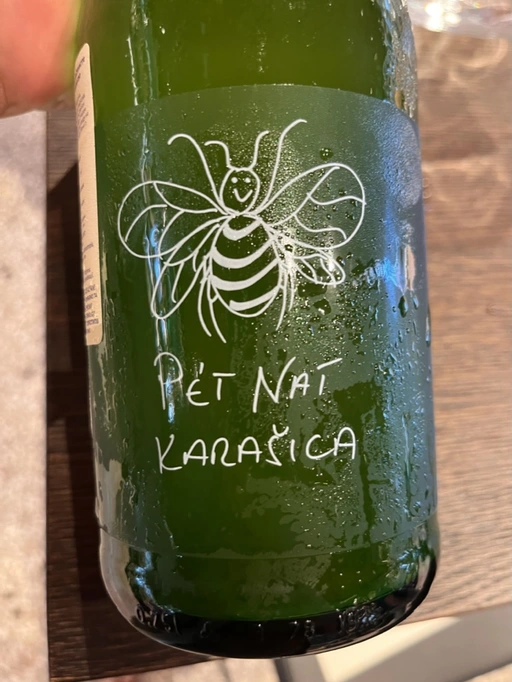

- Type
- White Sparkling, Brut nature
- Producer
- Hummel
- Vintage
- 2020
- Location
- Hungary, Földrajzi Jelzés Nélküli Bor
- Grapes
- Hárslevelű
- Alcohol
- 11
- Sugar
- 2.5
- Price
- 840 UAH
- Cellar
- N/A
Producer
Horst Hummel was born near Stuttgart. His family is a Schwabian/Hungarian mix. His great-grandfather was a winemaker in the Austro-Hungarian empire. In 1997 Horst visited Hungary, mostly to get a sense of his family origins. Passionate about wine, he wanted to visit the best winemaking regions during that trip. And so he came to Villány (southern Hungary). And he fell in love with the climate and wine culture. Horst casually asked his hosts about the price for vineyards. And just within days, he became a happy owner of a plot in Villány. By 1998 Hummel winery was up and running. Today Horst lives in Berlin but often commutes back and force between his home and Villány.
Weingut Hummel practices organic farming since 2008 and follows biodynamic principles since 2016. On the 7.5 ha vineyards, they grow Kékfrankos, Portugieser, Merlot, Cabernet Franc, Cabernet Sauvignon, Furmint, Traminer, and Hárslevelű.
Ratings
2022-07-15 - 7.50
I have tasted this wine on multiple occasions. Every time my experience was rather mediocre. But this time, it was different. After spending more time on lees, it became more cohesive. Less beer, more bready notes, croutons from Borodyn bread. Pear, stewed dried fruits, smokiness and flowers. Easy and light. Nice.
Related